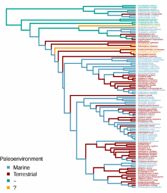
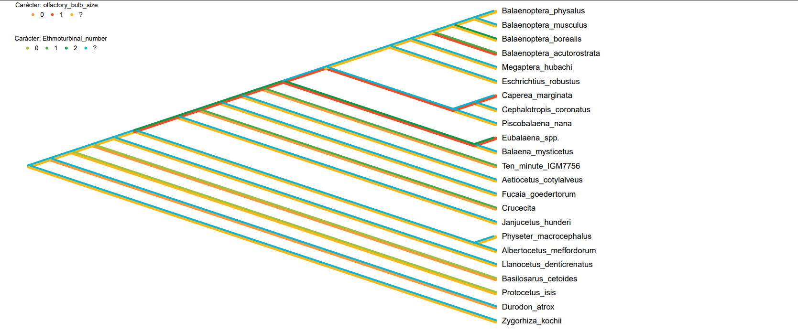
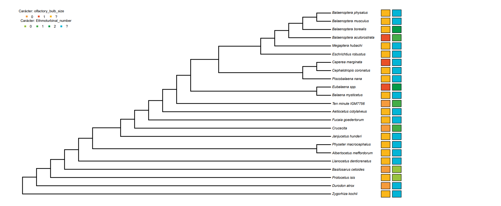

📊 Casos de Estudio
MultiMapR ha sido diseñado para facilitar análisis complejos de caracteres morfológicos en filogenias. A continuación se presentan ejemplos representativos de las aplicaciones del software en investigación paleontológica.
🔄 Ejemplo 1: Análisis de Múltiples estados de carácter
Contexto
Estudio del entorno de hábitat de un conjunto de especies de pterosaurios
Datos de Entrada
- Filogenia: 90 especies de reptiles voladores (pterosaurios)
- Caracteres analizados: 4 datos de relacionados con los entornos de desarrollo
- Estados: Distinción de hábitats en las que se desarrollaron las especies
Proceso de Análisis
- Carga de filogenia en formato Newick (.tree)
- Importación de matriz de caracteres (CSV)
- Visualización simultánea de los 4 estados de carácter
Resultados Obtenidos
- Identificación de 4 estados de carácter a través de la historia evolutiva en la filogenia

Figura 1: Distribución de estados de hábitat en pterosaurios
↔️ Ejemplo 2: Mapeo de múltiples caracteres de forma simultánea
Contexto
La presencia y evolución de distintos caracteres y sus estados a través de la historia evolutiva de un conjunto de cetáceos.
Datos de Entrada
- Filogenia: 23 especies de cetáceos (desde formas basales hasta ballenas modernas)
- Caracteres analizados: rasgos del tamaño del bulbo olfativo y número de etmoturbinales
- Estados: Múltiples estados morfológicos (3 por carácter)
Ventajas de MultiMapR en este Análisis
- Visualización integrada: Los caracteres se visualizan simultáneamente, permitiendo detectar patrones complejos
- Reconstrucción ancestral: Utilizado para inferir estados en nodos internos
- Personalización visual: Paleta de colores específica para cada tipo de estado morfológico
Resultados Obtenidos
- Identificación de correlaciones entre estados de caracter de distintos rasgos morfológicos

Figura 2: multimapeo simultáneo de distintos estados de carácter para 2 rasgos morfológicos
↔️ Ejemplo 3: Mapeo de múltiples caracteres de forma simultánea
Contexto
La presencia y evolución de distintos caracteres y sus estados a través de la historia evolutiva de un conjunto de cetáceos.
Datos de Entrada
- Filogenia: 23 especies de cetáceos (desde formas basales hasta ballenas modernas)
- Caracteres analizados: rasgos del tamaño del bulbo olfativo y número de etmoturbinales
- Estados: Múltiples estados morfológicos (3 por carácter)
Ventajas de MultiMapR en este Análisis
- Visualización integrada: Los caracteres se visualizan simultáneamente, permitiendo detectar la presencia de estados de caracter de forma sencilla
- Formato "tabla": Utilizado para mostrar la información de los taxones de forma sencilla y ordenada
- Personalización visual: Paleta de colores específica para cada tipo de estado morfológico
Resultados Obtenidos
- Identificación de múltiples estados de caracter en los taxones de una filogenia

Figura 3: multimapeo simultáneo de distintos estados de carácter para 2 rasgos morfológicos en formato de tabla
⬇️ Ejemplo 4: Reconstrucción de estados ancestrales
Contexto
Análisis y reconstrucción de caracteres "conflictivos" que podrían tomar distintos estados de carácter, aplicado a una filogenia de murciélagos
Configuración del Análisis
- Taxa incluidos: 17 especies
- Caracteres: 4 rasgos de un mismo caracter (C22)
- Método: Algoritmo de Fitch ACCTRAN
Funcionalidades Clave Utilizadas
- Mapeo de estados sobre ramas para identificar puntos de transición
- Visualización de paralelismos y divergencias
Resultados Obtenidos
- Identificación de múltiples estados de caracter en los taxones de una filogenia
- Reconstrucción de caracteres ancestrales según el método (ACCTRAN/DELTRAN)

Figura 4: Reconstrucción de estados ancestrales usando método ACCTRAN

Figura 5: Reconstrucción de estados ancestrales usando método DELTRAN
📚 Recursos para Usuarios próximos
Tutoriales Disponibles
- Guía de inicio rápido (PDF)
- Manual completo de funciones
- Videos demostrativos
- Datasets de ejemplo descargables
Próximas Funcionalidades
- Análisis de caracteres continuos
- Uso de distintos algoritmos para reconstrucción de caracteres ancestrales
- Interfaz gráfica interactiva
- Mejora de multimapeo simultáneo